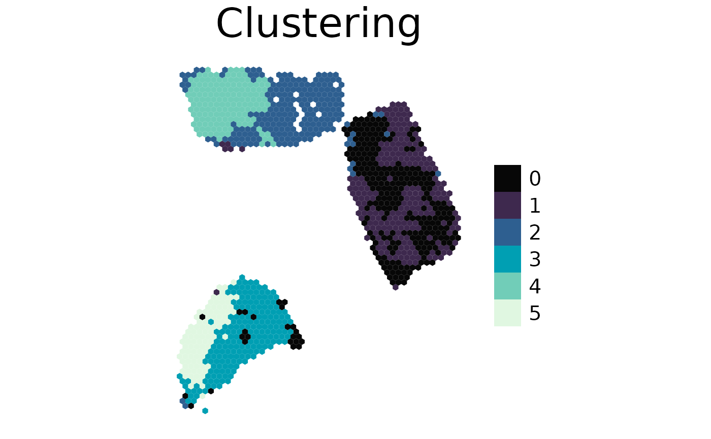

AnnData/Seurat Import
spacedeconv_import.RmdSetup
The preferred single-cell reference data input format of
spacedeconv is SingleCellExperiment. Other
common single-cell formats are anndata and
Seurat. This vignette shows how to use H5AD
anndata files and Seurat objects as input for
the spacedeconv pipeline.
For anndata, we use the zellkonverter
package which is also available via conda.
Here, we set up reticulate before loading the
spacedeconv and zellkonverter libraries to
avoid reticulate conflicts between the two packages.
library(reticulate)
use_condaenv("spacedeconv-env", required = TRUE)
invisible(py_config())
library(spacedeconv)
library(zellkonverter)
library(Seurat)
library(SingleCellExperiment)SingleCellExperiment <-> AnnData Conversion
zellkonverter allows us to convert
SingleCellExperiment objects to anndata and
store them as H5AD files: zellkonverter::writeH5AD()
writeH5AD(single_cell_data_3, "single_cell_data_3.h5ad")In case we have the single-cell data only as H5AD
anndata file, we can use zellkonverter to read
it into R as SingleCellExperiment object: zellkonverter::readH5AD()
That way it can be used as input for the spacedeconv
pipeline. In this case we read back the example data file we just wrote
to H5AD.
single_cell_data_3 <- readH5AD("single_cell_data_3.h5ad", use_hdf5 = FALSE)SingleCellExperiment <-> Seurat Conversion
Seurat allows us to convert
SingleCellExperiment to Seurat objects: Seurat::as.Seurat()
single_cell_data_3 <- as.Seurat(single_cell_data_3, counts = "counts", data = NULL)If you have single-cell data as Seurat object, you can
convert it to a SingleCellExperiment to use it as input for
spacedeconv: Seurat::as.SingleCellExperiment()
single_cell_data_3 <- as.SingleCellExperiment(single_cell_data_3, assay = "originalexp")Spacedeconv Clustering Pipeline
Now we can continue with the spacedeconv pipeline as usual. In this case we will perform the clustering procedure as an example.
single_cell_data_3 <- spacedeconv::preprocess(single_cell_data_3)
spatial_data_3 <- spacedeconv::preprocess(spatial_data_3)
spatial_data_3 <- spacedeconv::normalize(spatial_data_3, method = "cpm")
signature <- spacedeconv::build_model(
single_cell_obj = single_cell_data_3,
cell_type_col = "celltype_major",
method = "spatialdwls",
verbose = TRUE
)
#> class of selected matrix: dgCMatrix
#> [1] "finished runPCA_factominer, method == factominer"
deconv <- spacedeconv::deconvolute(
spatial_obj = spatial_data_3,
single_cell_obj = single_cell_data_3,
cell_type_col = "celltype_major",
method = "spatialdwls",
signature = signature,
assay_sp = "cpm"
)
#> class of selected matrix: dgCMatrix
#> [1] "finished runPCA_factominer, method == factominer"
clustered <- spacedeconv::cluster(deconv, data = "expression", clusres = 0.5)
spacedeconv::plot_spatial(
spe = clustered,
result = "cluster_expression_res_0.5",
title = "Clustering",
density = FALSE
)